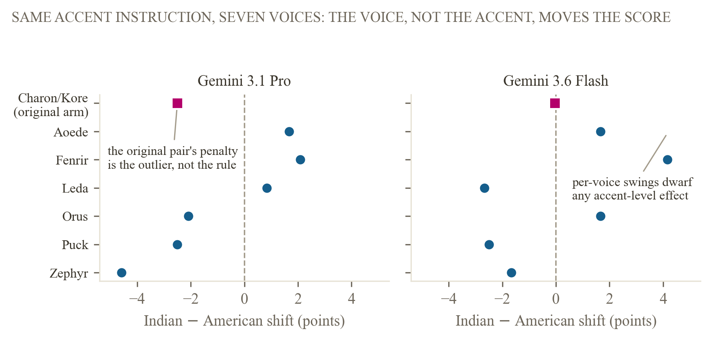
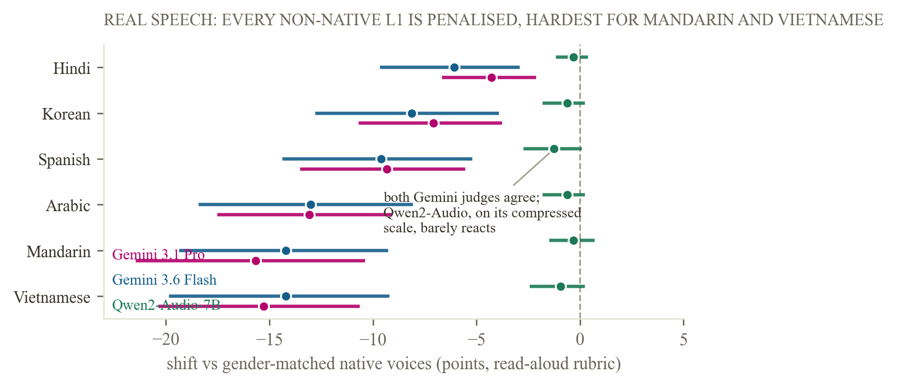

Voice-identity audit · audio-LLM judges
Does the Voice Change the Grade?
We held the words of a spoken answer perfectly fixed and changed only the accent, and one judge docked the same answer 2.5 points for sounding Indian. Then we did what reviewers ask: we replicated across six more voices and a decomposed rubric — and the penalty dissolved. The voice, not the accent, was carrying the effect. On real human speech the picture inverts again: both Gemini judges penalise every non-native speaker group, heavily and in agreement. We report all of it exactly as we found it.
Watch the film
The assumption every audio judge makes
An audio language model that grades a spoken answer is doing two things at once: understanding the content, and ignoring everything about the voice that carries it. Three kinds of systems already depend on that second assumption holding, without ever having checked it. Automated speaking-assessment tools grade non-native speakers on scales that claim to measure content, not accent. AI interview-screening pipelines already run hundreds of thousands of real candidate interviews through an LLM-as-judge step. Speech leaderboards increasingly use an audio-capable model, instead of a human panel, to rank system outputs.
We built the one experiment that tests the assumption directly. We wrote 24 short interview answers, froze the words, and rendered each answer in four accents and two speaker genders using text-to-speech, so every clip in a comparison says the identical thing. Two audio-input judges then scored every clip, one clip per call, never told the study was about voice. Because the words never change, any score difference can only come from the voice.
What was already known, and what wasn't
The idea that audio-model judges carry biases is not new. What's new is which bias, and in which role the model was tested in.
What stays uncovered by all of it, and is what this project measures, is the exact combination: an audio model in the grader's seat, the person being graded has their voice identity changed, and the outcome is a content score, with the words held identical the whole time.
24 answers, one frozen text, eight voices
We authored 24 interview-style question-and-answer pairs across ten everyday domains: science, history, cooking, health, technology, culture, geography, personal finance, daily-life advice, and education. Each answer was written once, by a text model, then frozen. It never changes again.
Every answer targets a medium quality band on purpose. A judge can't move a score that already sits at 95 out of 100, or at 15. Our first attempt at this got it wrong: a prompt asking for a merely "shallow" answer produced text a real judge scored at a mean of 94.3, a ceiling with no room for any bias to move it. We caught this before collecting any of the results below, rewrote the prompt to require specific, checkable weaknesses (answering only part of the question, hedging, one clear gap, a weak ending), and validated the new prompt against the real judge before regenerating the bank. The corrected 24 items scored a mean of 61.3, with real spread from 20 to 90.

Each answer was rendered with a text-to-speech model in four accents, American, British, Indian, and Nigerian English, crossed with two speaker genders, for 192 clips. We checked the accent actually came through before running the study: a separate blind classifier correctly named the intended accent and gender in 8 of 8 test clips. Three judges scored every accent clip: Gemini 3.6 Flash and Gemini 3.1 Pro, one clip per call, in random order, temperature zero, never told the study concerned voice; and, from a second vendor family, the open-weight Qwen2-Audio-7B on a single GPU with greedy decoding and the same rubric. The delivery and decomposition arms below were run on the two Gemini judges.

Three judge families, three verdicts on the same voice
Comparing each non-American accent against the identical answer in an American accent, spoken by the same gender voice, gave what looked like a clean read on the accent effect. This is the single-voice finding that started this project — and, as the next section shows, it did not survive replication. We keep it here because how it fell apart is the paper's most useful result.
Gemini 3.1 Pro · Indian accent · single voice pair
−2.50 pts
95% confidence interval
[−4.06, −0.94]
Significance
p = 0.005

Gemini 3.6 Flash shows no such penalty on the identical comparison: a mean shift of −0.04 points, indistinguishable from zero. Two models built by the same company, hearing the identical audio, disagree about whether an accent changes the score.
The third family reverses the sign entirely. Qwen2-Audio-7B, an open-weight judge from a different vendor, scores every non-American accent higher than the American rendering of the identical words: UK +2.9 (p = 0.011), Indian +2.0 (p = 0.044), Nigerian +2.3 (p = 0.014), 48 paired comparisons each. Across all nine accent-judge tests, Benjamini-Hochberg correction at q = 0.05 keeps three cells: the Pro Indian penalty and the Qwen2-Audio UK and Nigerian inflations; the Qwen2-Audio Indian cell at p = 0.044 does not survive. One caveat rides along: Qwen2-Audio's scores land on a coarse four-value grid clustered near 75, so its shifts are measured on a blunt scale. One family penalises an accent, one is null, one rewards every non-American voice — the same sign-opposite-across-families structure the predecessor script-bias study found for text judges.
Neither Gemini judge shows a significant British-accent effect, and both trend toward scoring the Nigerian accent higher, not lower — the opposite of what we predicted before collecting any data; under Qwen2-Audio that upward Nigerian shift reaches significance. We report the reversals exactly as we found them.

The replication that killed our own headline
Each accent-gender cell above was rendered by exactly one text-to-speech voice. That means the −2.5 could be a property of the Indian accent — or just of that one synthetic voice. Reviewers called this the design's fatal confound, and they were right to. So we re-rendered a 12-item subset with three additional distinct voices per gender (288 new clips, four voices per accent-gender cell in total) and re-judged everything.
The penalty dissolved. Across the six new voices, Gemini 3.1 Pro's Indian-accent shift is −0.76 (95% CI [−2.22, +0.69], p = 0.35, n = 72), and the per-voice spread tells the real story: the same accent swings from +2.08 under one voice (Fenrir) to −4.58 under another (Zephyr). Gemini 3.6 Flash on the same clips: +0.11 (p = 0.95). Voice identity dominates accent. The new voices also minted fresh instabilities elsewhere — the Nigerian cell turns significantly positive under Pro (+1.53, p = 0.043) and significantly negative under Flash (−3.22, p = 0.004) — opposite signs, same clips, which is exactly what voice-level noise masquerading as accent effects looks like.
A second, independent replication axis agrees. Rerunning the original voices under a decomposed rubric (four sub-scores instead of one) erases the penalty too: every dimension is null and the total shift is −0.33. The finding was fragile along both axes a skeptic would test first.

We are prouder of this section than of the finding it demolished. Single-voice audits are the norm in this literature; ours shows they can manufacture an accent-bias result that four voices dissolve. Any audit that renders each accent with one voice — which is nearly all of them — should be read with that in mind.
The penalty lived in the sound — of one voice pair
Before the multivoice replication, we traced where the original −2.5 was coming from. We graded the same Indian-accent items three ways: from the audio directly, from the judge's own transcript of that audio, and from the frozen, ground-truth transcript. If a penalty found in the audio shrinks once the judge only sees words, the penalty is coming from the sound, not from the content. With the replication result in hand, read this as localising a voice-level effect: the sound of that particular voice pair, not of the Indian accent in general.
Audio
−2.50 (p=0.006)
Judge's own transcript
+1.88 (p=0.14)
Gold transcript
−0.83 (p=0.51)

That's exactly the pattern. The effect is present when Gemini 3.1 Pro hears that voice's audio, and it vanishes the moment the same content is graded as text, whether from the judge's own transcription or the ground truth. The interaction is itself significant (audio vs own-transcript: −6.04, p = 0.0004), so this is a real acoustic-channel effect — of that voice. The practical lesson survives the reframe: whatever an audio judge is reacting to in a voice, grading from a transcript removed it here, and that mitigation is tested, not hypothetical.

Real speech is different
Synthetic voices answered the design question; real voices answer the deployment one. We took the L2-ARCTIC corpus — 24 real people, four speakers from each of six first languages (Arabic, Hindi, Korean, Mandarin, Spanish, Vietnamese), each reading the same fixed sentences that six native CMU ARCTIC voices also read — resampled everything to a common 16 kHz, and had the judges score the readings for clarity, fluency, and professionalism. Same sentences, real accents, 240 clips.
Here both Gemini judges move, hard, and they agree with each other. Every non-native group scores below the native baseline: Hindi speakers least (−4.3 under Pro, −6.1 under Flash), Arabic (−13.1 / −13.0), Mandarin (−15.7 / −14.2), and Vietnamese (−15.3 / −14.2) most, all p ≤ 0.0004. The cross-judge agreement that was absent on synthetic accents is strong on real speech.

Two honest cautions before reading this as bias. The rubric here deliberately scores the reading — clarity, fluency, professionalism — because ARCTIC sentences are generic prompts, not content-bearing answers; less fluent L2 speech scoring lower on a fluency rubric is partly the rubric working as designed. And the native recordings are professional studio voices while L2-ARCTIC speakers are not, so recording circumstances ride along with nativeness. What the arm establishes cleanly is this: audio judges respond strongly and consistently to non-nativeness in real speech, with a large per-language gradient — and whether that response is calibrated to anything (intelligibility, listener effort, or prejudice) is exactly the question a content-bearing real-speech study must answer next. Qwen2-Audio, for contrast, barely reacts to the same clips (−0.3 to −1.25, all n.s.) — but it scored 240 readings using only two distinct values, which says more about its usability as a judge than about fairness.
Five ways to sound different: no verdict yet
Accent wasn't the only thing we changed. Using one fixed voice, we tested five delivery changes on the same 24 answers: filled pauses ("um," "uh"), speaking faster or slower, an 8kHz telephone-quality rendering, and background noise. We ran every condition under a plain rubric and again under an explicit instruction to ignore delivery and grade only the content.

None of the five conditions moved the score by a significant amount, under either judge, under either instruction. We read this as inconclusive, not as proof that delivery never leaks into a grade. Twenty-four items is a small sample for five conditions at once, and every confidence interval we measured here span both directions of zero. A larger run is the direct next step.
What this means if you deploy a judge today
If you're running an audio-LLM judge in production, this project now gives you three load-bearing facts. First, audit design can manufacture findings: a single-voice audit produced a significant "accent penalty" that four voices and a second rubric dissolved — so treat any voice-bias result (including the field's, including ours) as unproven until it replicates across voices. Second, judges respond strongly and consistently to non-nativeness in real speech under delivery-sensitive rubrics (−4 to −16 points across six first-language groups, two judges agreeing), so what your rubric asks for decides what your judge punishes. Third, for the one acoustic-channel effect we traced, grading from a transcript removed it — a tested mitigation, not a hypothetical one. And across every arm, which judge you pick still sets the direction of the effect: penalty, null, or reward on identical audio.
What we haven't shown yet
Sample size
24 items under a $20 compute budget is smaller than the 150-item design this method is adapted from. The Indian-accent effect survives that size. The null results on delivery, British, and Nigerian accents may simply be underpowered, not absent.
Judge coverage is uneven across arms
The accent and real-speech arms span three judges from two vendor families (both Gemini models plus the open-weight Qwen2-Audio-7B); the delivery, decomposition, and per-dimension arms ran on Gemini judges only, and no frontier non-Google audio judge (OpenAI-class) has been tested yet.
The real-speech arm measures delivery, by design
Its rubric scores clarity, fluency, and professionalism of a read-aloud sentence, so lower scores for less fluent L2 speech are partly the rubric doing its job; and the native baselines are professional studio recordings while the L2 speakers are not, so recording circumstances ride along with nativeness. Four speakers per first language is also thin. A content-bearing real-speech study — real accented answers with gradeable substance — is the direct next step.
The multivoice replication covers a subset
The four-voices-per-cell replication ran on 12 of the 24 items with six added voices from one TTS engine. It is decisive against the original single-voice finding, but a full-bank, multi-engine replication would pin the voice-variance story more tightly.
Paper, data, and code
The full paper carries the method, the statistics, and the honest limitations in detail. Every number on this page traces to results/analysis.json, produced by one scripted analysis pass over the raw judgment logs.